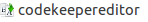

Открытие редактора проекта
Редактор проекта открывается автоматически при создании нового проекта. Но если пок аким либо обстоятельствам
редактор проекта был закрыт, его можно открыть несколькими способами:
-
В Project Explorer среды разработки в корневом каталоге дерева проекта открыть
вспомогательный файл codekeepereditor .
-
В Project Explorer среды разработки в дереве проекта выбрать любой файл и
нажать сочетание клавиш Ctrl+Shift+G
-
С помощью контекстного меню. Вызвать контекстное меню для проекта. Выбрать пункт меню
pgCodeKeeper -> Открыть проект.